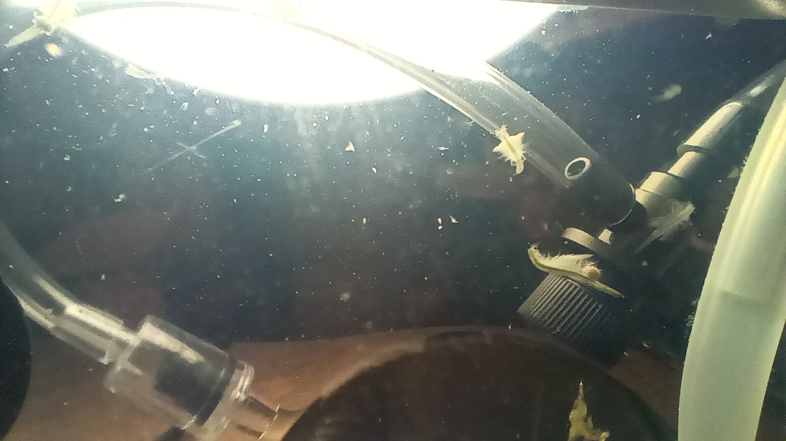
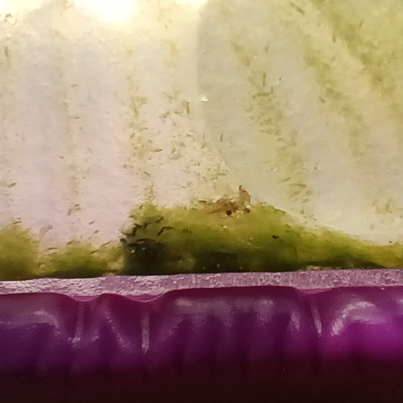
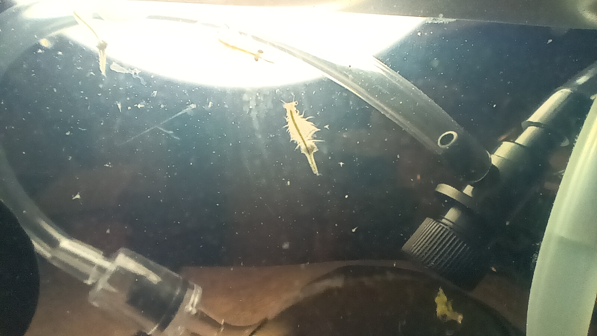

Going Green!
March 7, 2025
Great news, everyone!
The tank has finally started to grow algae! That's a sea monkey's absolute favorite food! And it took less time than we thought. Apparently, we live in a colder part of the world, and the Big Thing didn't think there would be a lot of algae spores in the air this time of year. But he must have been wrong about something, as you can see!
I think about a week ago, the mostly-yellow stuff at the bottom of our tank began to have a little green line underneath it. The yellow stuff has been collecting for a while. It's made up of poop (ew!) and our old, molted exoskeletons. There's probably a lot of dead hatchlings in there too. Hatchlings are hard to raise in a sea monkey tank with adults already in it; the adults eat all the free-floating package-food faster than the babies can! And the babies are not strong enough to grab the leftovers on the surface of the water, or the walls and floor of the tank. So they starve. From my generation, only me and two others survived!
But I'm getting off track. Anyway, the algae started to form slowly, and at first nobody was eating it. But as it grew and grew, more of the adults started to reach it, and pretty soon, we started to turn green! Check it out:
Don't we look cool? And it's good for us, too! A green sea monkey is a healthy sea monkey! Also, the algae will let out little bubbles every once in a while. It's producing oxygen! How cool is that? The tank feels so much nicer, even with the bubble-making contraption.
It's not perfect in here yet, though. Two adults died last week! But actually, something pretty amazing happened because of that. The algae got a hold of the dead sea monkeys and started to break them down. It made them turn green and start to disappear:
And at the same time, the algae started to bloom even faster! Pretty soon the whole tank was looking green.
You know what that tells me? Our tank is finally bio-active! That means that we have a nutrient cycle! Because the sea monkeys like me will eat the algae, and then the algae will eat our waste (poop, sheddings, dead sea-monkeys)! And they breathe carbon-dioxide and produce oxygen, and we breathe oxygen and produce carbon-dioxide! Everything is cycling! Woo hoo!
Oh! I forgot to mention: I'm all grown-up now!
That's me front-and-center (hi, everyone!). See how I have two little egg sacs? That means I'm a female! Fun fact: did you know that female sea monkeys like me can actually reproduce without mating? If we do, almost all of the babies will also be female. But it's useful when there are no males around.
And speaking of babies, look at all the hatchlings around me! The tank is full of them right now. Some are getting pretty big! I wonder if more of them will make it to adulthood now that there's algae growing in the tank. I'll let you know soon!